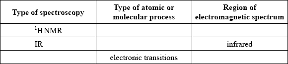
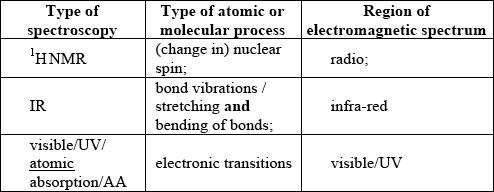

SL Paper 3
Selected regions of the electromagnetic spectrum are represented in order of increasing frequency below.

Identify region A.
State which region of the electromagnetic spectrum can be used to identify the functional groups present in a molecule.
Explain why the absorptions in infrared (IR) spectroscopy occur at much higher frequency than those in \(^{\text{1}}{\text{H}}\,{\text{NMR}}\) spectroscopy.
Markscheme
radio(wave);
infrared/IR;
IR involves vibrations of bonds / IR involves shorter wavelength/more energy than \(^{\text{1}}{\text{H}}\,{\text{NMR}}\);
whereas \(^{\text{1}}{\text{H}}\,{\text{NMR}}\) involves transitions between different energy states in the nucleus which are lower in energy / \(^{\text{1}}{\text{H}}\,{\text{NMR}}\) occurs in the radio region therefore energy is lower;
Examiners report
Most candidates were familiar with regions of the electromagnetic spectrum and their uses, but had difficulty describing the relationship between energy and frequency or wavelength.
Most candidates were familiar with regions of the electromagnetic spectrum and their uses, but had difficulty describing the relationship between energy and frequency or wavelength.
Most candidates were familiar with regions of the electromagnetic spectrum and their uses, but had difficulty describing the relationship between energy and frequency or wavelength.
Modern analytical techniques are used widely for different purposes in everyday life.
Two types of spectroscopy are absorption and emission. Distinguish between each type of spectra, including how each is produced.
Absorption spectra:
Emission spectra:
Markscheme
Absorption spectra:
(when radiation is passed through sample) atom/ion/molecule becomes excited / electrons raised to higher energy level/state / OWTTE;
only specific frequencies/wavelengths absorbed / black lines on a coloured background / spectrum shows where absorption happens, such as dips (in the IR spectrum) / OWTTE;
Emission spectra:
(energy given out by) excited atom/ion/molecule moves to lower energy state / excited electrons move to lower energy level/ground state / OWTTE;
colours same as those missing from absorption spectra / coloured lines on black background / only specific frequencies/wavelengths emitted / OWTTE;
Difference may also be shown by two different representations of spectra.
Examiners report
Answers generally showed understanding of the relationship between the spectra and electronic transitions. Some candidates failed to highlight that emission spectra are obtained from an excited sample.
Electromagnetic waves can transfer energy and carry information.
State the relationship between the energy of a wave and its wavelength.
Markscheme
\(E = \frac{{hc}}{\lambda }/E = \alpha \frac{1}{\lambda }\) / energy inversely proportional to wavelength / the higher the energy the shorter the wavelength / OWTTE;
Do not accept \(E = h\upsilon /hf\).
Examiners report
Most students scored the mark but only a few of them stated the quantitative relationship (inverse proportionality).
Describe the essential difference between the emission spectrum of sodium and the absorption spectrum of sodium.
Identify the five missing components in the following table.

Markscheme
Emission spectrum: coloured lines and Absorption spectrum: black/dark lines;
OR
Emission spectrum: lines and Absorption spectrum: continuous;
Allow “Emission spectrum: electrons emit energy as they drop to lower energy levels and Absorption spectrum: electrons absorb energy as they are promoted to higher energy levels” / OWTTE.
 ;
For M4 both visible/UV/atomic absorption/AA for type of spectroscopy and region of EMS required.
Examiners report
Students found it difficult to explain clearly the difference between emission and absorption spectra for part (a). Most candidates successful in gaining the mark, described the difference in terms of energy released or absorbed by the electrons. There was lack of understanding however for the difference in the coloured and the dark lines produced by the two spectra. Candidates who described the difference in terms of coloured lines or continuous spectrum had difficulty attaining the mark. Very few students achieved all 4 points for part (b). Most had difficulty completing the information for \(^{\text{1}}{\text{H}}\,{\text{NMR}}\). Many stated a number for what was measured instead of the atomic/molecular process e.g. chemical shift as opposed to nuclear spin. Candidates were well prepared for answering part (c) often, stating concentration of the element as the answer.
Students found it difficult to explain clearly the difference between emission and absorption spectra for part (a). Most candidates successful in gaining the mark, described the difference in terms of energy released or absorbed by the electrons. There was lack of understanding however for the difference in the coloured and the dark lines produced by the two spectra. Candidates who described the difference in terms of coloured lines or continuous spectrum had difficulty attaining the mark. Very few students achieved all 4 points for part (b). Most had difficulty completing the information for \(^{\text{1}}{\text{H}}\,{\text{NMR}}\). Many stated a number for what was measured instead of the atomic/molecular process e.g. chemical shift as opposed to nuclear spin. Candidates were well prepared for answering part (c) often, stating concentration of the element as the answer.
Paper chromatography is a simple method used to separate and identify the components in a mixture. To aid identification, the retention factor, \({R_{\text{f}}}\), of an unknown component can be compared with the \({R_{\text{f}}}\) values of pure samples of the possible components.
Describe how the wavelength, the frequency, and the energy, change in moving from the infrared region of the electromagnetic spectrum to the radio region of the electromagnetic spectrum.
Wavelength:
Frequency:
Energy:
Markscheme
Wavelength: increases/longer;
Frequency: decreases/lower;
Energy: decreases/lower;
Accept “weaker”.
Examiners report
The components of the double beam spectrometer seemed to be well known, though in the first part many said a monochromator “emitted” light of a single wavelength, incorrectly implying it was the light source. Many candidates knew that IR absorption depended on vibrations and polarity, though only a few gained the second mark by specifying a change in polarity. The final section appeared to well understood by candidates, with even the weakest students usually scoring full marks.
Nuclear fission of 235U is one source of electrical energy that has a minimal carbon footprint.
Natural uranium needs to be enriched to increase the proportion of 235U. Suggest a technique that would determine the relative abundances of 235U and 238U.
Explain how 235U fission results in a chain reaction, including the concept of critical mass.
Suggest one reason why there is opposition to the increased use of nuclear fission reactors.
Markscheme
mass spectrometry/mass spectroscopy/MS
Accept “analysis of radiation emitted”.
[1 mark]
critical mass: mass required so that «on average» each fission/reaction results in a further fission/reaction
Any two for [2 max]:
neutron captured by «235U» nucleus
fission/reaction produces many neutrons/more than one neutron
if these cause further fission/reaction a chain reaction occurs
Accept “minimum mass of fuel needed for the reaction to be self-sustaining”.
Accept answers in the form of suitable diagrams/equations.
[3 marks]
produce long lived/long half-life radioisotopes/radioactivity
OR
could be used to produce nuclear weapons
OR
«nuclear» accidents/meltdowns can occur
Accept “long lived/long half-life radioactive waste”.
[1 mark]